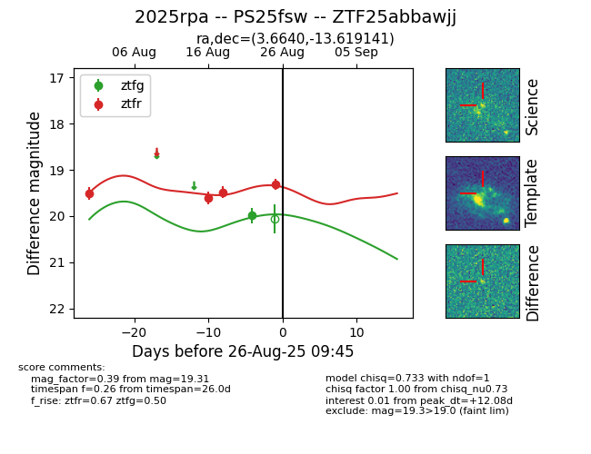

Target 2025rpa at 2025-08-26 09:50, see:
FINK: fink-portal.org/ZTF25abbawjj
Lasair: lasair-ztf.lsst.ac.uk/objects/ZTF25abbawjj
ALeRCE: alerce.online/object/ZTF25abbawjj
TNS: wis-tns.org/object/2025rpa
YSE: ziggy.ucolick.org/yse/transient_detail/2025rpa
alt names
ZTF25abbawjj (ztf,fink)
2025rpa (tns,yse)
PS25fsw (panstarrs)
coordinates:
equatorial (ra, dec) = (3.6640,-13.61914)
galactic (l, b) = (88.6587,-73.99072)
photometry
last atlaso=19.56, ztfg=19.99, ztfr=19.31
1 atlaso, 1 ztfg, 4 ztfr detections
